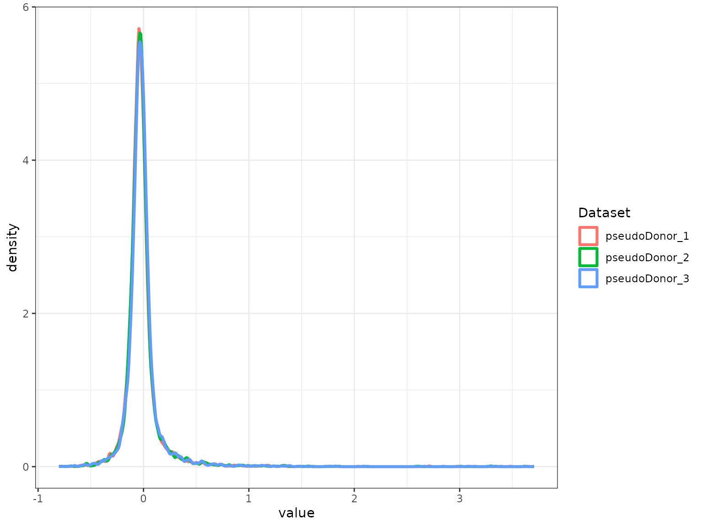
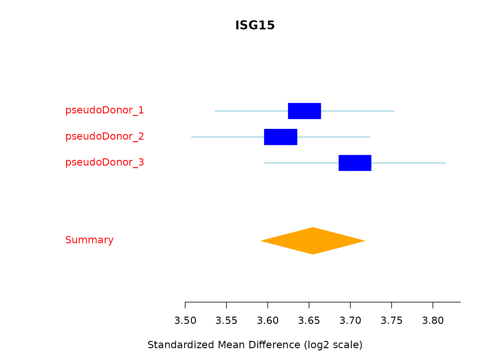
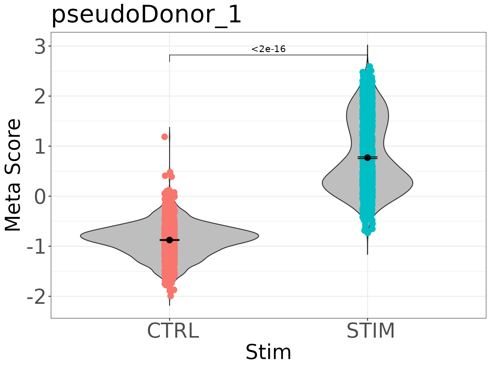
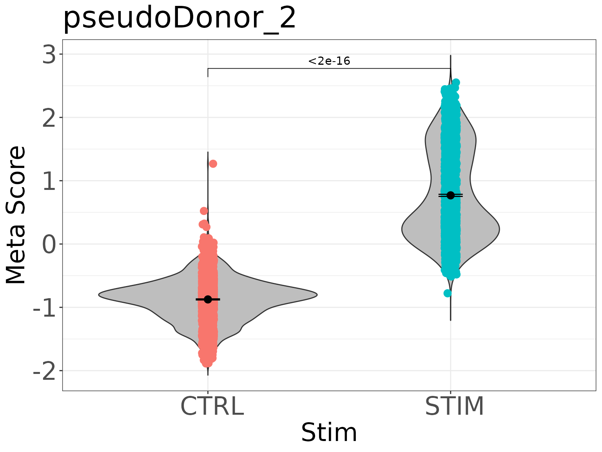
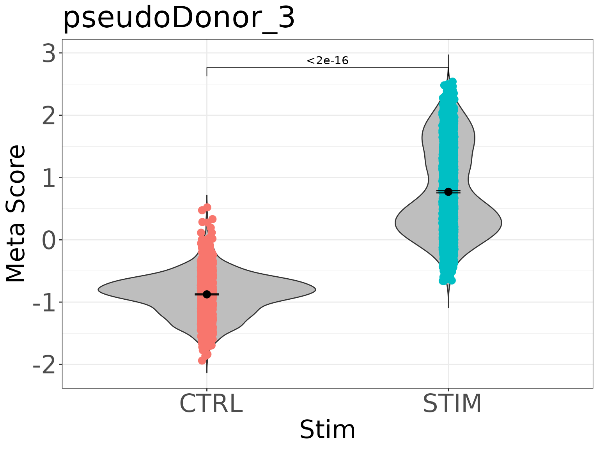
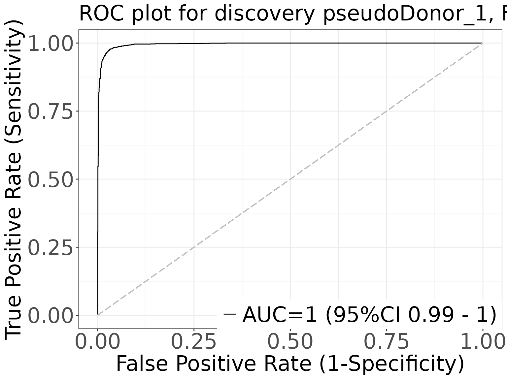

Example 2: Full MetaIntegrator analysis with generateFullMA()
Kalani Ratnasiri
2026-10-19
Source:vignettes/Example2_scMetaIntegrator.Rmd
Example2_scMetaIntegrator.RmdOverview
Example 1 used runscMI() to get a table of
differentially expressed genes (DEGs). This example uses
generateFullMA(), which returns the full MetaIntegrator
object. With the full object you can run any MetaIntegrator function on
your scMI results, such as forest plots, gene signatures, gene scores
and ROC curves.
The example also shows what to do when the pairing is incomplete. We remove one sample on purpose, check the pairing, and keep only the complete pairs.
| Step | Function | Purpose |
|---|---|---|
| 1 to 2 |
NormalizeData() and metadata setup |
Prepare four pseudo donors and remove one sample to create an unpaired donor |
| 3 to 4 |
confirmPairs(),
completePairSubset()
|
Detect and remove incomplete pairs |
| 5 | thresholdGenesAcrossPairs() |
Keep genes expressed in at least 1% of cells in every pair |
| 6 | generateFullMA() |
Build the full MetaIntegrator object |
| 7 | $metaAnalysis$pooledResults |
Get the detailed DE report |
| 8 | MetaIntegrator functions | Forest plot, gene signature, gene scores and ROC curves |
Setup
The example data come from the ifnb.SeuratData package.
See Example 1 for the install command. Loading MetaIntegrator is
required to run scMetaIntegrator.
Step 1: Load and preprocess the data
The ifnb dataset contains PBMCs that were stimulated
with interferon beta (STIM) or left as controls
(CTRL). The dataset does not record donors, so we assign
each cell to one of four pseudo donors to have a variable to pair on. In
your own data, use the real donor or patient ID.
data("ifnb")
ifnb = UpdateSeuratObject(ifnb)
ifnb = NormalizeData(ifnb)
## assign cells to four pseudo donors in turn, then build a unique sample ID
ifnb$pseudoDonor = paste0("pseudoDonor_", rep(1:4, length.out = ncol(ifnb)))
ifnb$sample = paste0(ifnb$pseudoDonor, "_", ifnb$stim)Step 2: Create an unpaired sample
We remove the stimulated sample of pseudo donor 4. This donor now has only a control sample, to show how to handle imbalanced pairs.
Step 3: Confirm the pairing structure
confirmPairs() returns TRUE only when every
pair has exactly two samples. Here it returns FALSE because
pseudo donor 4 has one sample.
confirmPairs(ifnb, uniqueSampleID = "sample", pairingColumn = "pseudoDonor")
#> [1] FALSEStep 4: Remove unpaired samples
Because the pairing is incomplete, we keep only the complete pairs
with completePairSubset(). You can also set
completePairsOnly = TRUE in generateFullMA()
to do this inside the function. The table shows that pseudo donor 4 is
gone.
ifnb_complete = completePairSubset(ifnb, uniqueSampleID = "sample", pairingColumn = "pseudoDonor")
#> Removing the following samples: pseudoDonor_4
table(ifnb_complete$pseudoDonor, ifnb_complete$stim)
#>
#> CTRL STIM
#> pseudoDonor_1 1637 1863
#> pseudoDonor_2 1637 1863
#> pseudoDonor_3 1637 1863Step 5: Filter lowly expressed genes
thresholdGenesAcrossPairs() keeps genes detected in at
least 1% of cells in every pair. Passing the result to
generateFullMA() restricts the analysis to those genes.
thresholdedGenes = thresholdGenesAcrossPairs(
seuratObject = ifnb_complete,
uniqueSampleID = "sample",
pairingColumn = "pseudoDonor",
percentThreshold = 0.01
)
length(thresholdedGenes)
#> [1] 6964Step 6: Run scMetaIntegrator and build the full object
generateFullMA() takes the same arguments as
runscMI() and returns the full MetaIntegrator
metaObject. Two arguments matter for this example:
-
runLeaveOneOut = TRUEruns the leave-one-out analyses thatfilterGenes()needs in step 8. -
maxCores = 1limits the number of parallel processes.
The per-pair expression matrices are kept by default, which the forest plot, gene scores and ROC plots need.
scMIObj = generateFullMA(
seuratObject = ifnb_complete,
uniqueSampleID = "sample",
pairingColumn = "pseudoDonor",
comparisonGroupColumn = "stim",
groupOne = "STIM",
groupTwo = "CTRL",
thresholdGenes = thresholdedGenes,
maxCores = 1,
runLeaveOneOut = TRUE
)
#> Generating full MA object
#> Running meta-analysis
#> Found common probes in 2
#> Found common probes in 3
#> Computing effect sizes...
#> Computing summary effect sizes...
#> Computing Fisher's output...
#> Found common probes in 2
#> Computing effect sizes...
#> Computing summary effect sizes...
#> Computing Fisher's output...Found common probes in 2
#> Computing effect sizes...
#> Computing summary effect sizes...
#> Computing Fisher's output...Found common probes in 2
#> Computing effect sizes...
#> Computing summary effect sizes...
#> Computing Fisher's output...Step 7: Get the detailed DE report
The pooled results table is stored in the object. It has the columns
returned by runscMI() plus extra statistics, such as
tauSquared for between-pair heterogeneity.
scMI_output = scMIObj$metaAnalysis$pooledResults
head(scMI_output[order(scMI_output$effectSizeFDR), c("gene", "effectSize", "effectSizeFDR", "tauSquared", "numPairs")])
#> gene effectSize effectSizeFDR tauSquared numPairs
#> APOBEC3A APOBEC3A 0.9035652 0 0.000000000 3
#> BST2 BST2 1.0822657 0 0.000000000 3
#> CCL8 CCL8 0.9449267 0 0.000000000 3
#> CMPK2 CMPK2 1.1791856 0 0.001227172 3
#> CXCL10 CXCL10 1.3560547 0 0.000000000 3
#> CXCL11 CXCL11 1.0436900 0 0.000000000 3Step 8: Analyze the object with MetaIntegrator
All MetaIntegrator functions work on the object from step 6. The MetaIntegrator vignette lists the available methods.
Step 8a: Forest plot of the top DEG
We pick the gene with the largest effect size among genes with an FDR of 0 and no heterogeneity between pairs. The forest plot shows the effect size in each pseudo donor and the pooled estimate.
topDEG = scMI_output[scMI_output$effectSizeFDR == 0 & scMI_output$tauSquared == 0, ]
topDEG = topDEG[order(topDEG$effectSize, decreasing = TRUE), ]$gene[1]
forestPlot(scMIObj, topDEG)
#> [1] "character"
Step 8b: Build a gene signature and score each cell
filterGenes() selects genes with an FDR below 0.0001
that remain significant when any single pair is left out. It stores the
gene signature in $filterResults, under a name that records
the filter settings. We then score each cell with the signature and save
the score in the cell metadata of each pseudo donor.
scMIObj = filterGenes(scMIObj, isLeaveOneOut = TRUE, FDRThresh = 0.0001)
names(scMIObj$filterResults)
#> [1] "FDR1e-04_es0_nStudies1_looaTRUE_hetero0"
gene_signature = scMIObj$filterResults[["FDR1e-04_es0_nStudies1_looaTRUE_hetero0"]]
for (donor in names(scMIObj$originalData)) {
scMIObj$originalData[[donor]]$pheno$score =
calculateScore(gene_signature, scMIObj$originalData[[donor]])
}
#> Used 533 of 533 pos genes, and 684 of 684 neg genes
#> Used 533 of 533 pos genes, and 684 of 684 neg genes
#> Used 533 of 533 pos genes, and 684 of 684 neg genesStep 8c: Violin plots of the signature score
violinPlot(gene_signature, scMIObj$originalData$pseudoDonor_1, labelColumn = "stim")
violinPlot(gene_signature, scMIObj$originalData$pseudoDonor_2, labelColumn = "stim")
violinPlot(gene_signature, scMIObj$originalData$pseudoDonor_3, labelColumn = "stim")
Step 8d: ROC plot for one pseudo donor
rocPlot(gene_signature, scMIObj$originalData$pseudoDonor_1,
title = "ROC plot for discovery pseudoDonor_1, FDR: 0.0001")
#> Used 533 of 533 pos genes, and 684 of 684 neg genes
#> For dataset pseudoDonor_1, AUC = 0.996